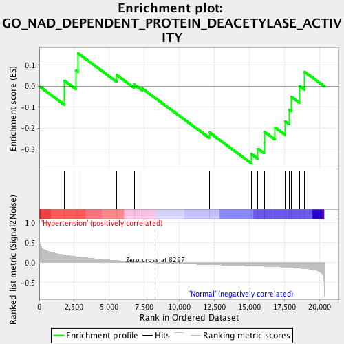
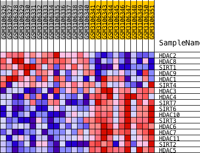
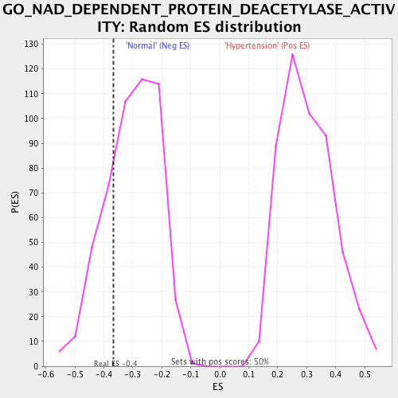

| | | Dataset | GSE113439.GSE113439.cls#Hypertension_versus_Normal |
| Phenotype | GSE113439.cls#Hypertension_versus_Normal |
| Upregulated in class | Normal |
| GeneSet | GO_NAD_DEPENDENT_PROTEIN_DEACETYLASE_ACTIVITY |
| Enrichment Score (ES) | -0.3676564 |
| Normalized Enrichment Score (NES) | -1.2131771 |
| Nominal p-value | 0.24603175 |
| FDR q-value | 1.0 |
| FWER p-Value | 1.0 |
Table: GSEA Results Summary

Fig 1: Enrichment plot: GO_NAD_DEPENDENT_PROTEIN_DEACETYLASE_ACTIVITY
Profile of the Running ES Score & Positions of GeneSet Members on the Rank Ordered List
| PROBE | DESCRIPTION
(from dataset) | GENE SYMBOL | GENE_TITLE | RANK IN GENE LIST | RANK METRIC SCORE | RUNNING ES | CORE ENRICHMENT | | 1 | HDAC2 | description | | | 1798 | 0.193 | 0.0265 | No |
| 2 | HDAC8 | description | | | 2643 | 0.152 | 0.0754 | No |
| 3 | SIRT1 | description | | | 2771 | 0.147 | 0.1566 | No |
| 4 | HDAC9 | description | | | 5514 | 0.055 | 0.0545 | No |
| 5 | HDAC1 | description | | | 6781 | 0.027 | 0.0084 | No |
| 6 | SIRT4 | description | | | 7366 | 0.015 | -0.0112 | No |
| 7 | HDAC3 | description | | | 12166 | -0.044 | -0.2208 | No |
| 8 | HDAC4 | description | | | 15155 | -0.075 | -0.3229 | Yes |
| 9 | SIRT7 | description | | | 15616 | -0.081 | -0.2973 | Yes |
| 10 | SIRT6 | description | | | 16068 | -0.087 | -0.2679 | Yes |
| 11 | HDAC10 | description | | | 16076 | -0.087 | -0.2167 | Yes |
| 12 | SIRT3 | description | | | 16840 | -0.097 | -0.1963 | Yes |
| 13 | HDAC6 | description | | | 17572 | -0.110 | -0.1670 | Yes |
| 14 | HDAC7 | description | | | 17869 | -0.115 | -0.1132 | Yes |
| 15 | HDAC11 | description | | | 17989 | -0.117 | -0.0492 | Yes |
| 16 | SIRT2 | description | | | 18620 | -0.134 | -0.0006 | Yes |
| 17 | HDAC5 | description | | | 18950 | -0.144 | 0.0692 | Yes |
Table: GSEA details [plain text format]

Fig 2: GO_NAD_DEPENDENT_PROTEIN_DEACETYLASE_ACTIVITY
Blue-Pink O' Gram in the Space of the Analyzed GeneSet

Fig 3: GO_NAD_DEPENDENT_PROTEIN_DEACETYLASE_ACTIVITY: Random ES distribution
Gene set null distribution of ES for GO_NAD_DEPENDENT_PROTEIN_DEACETYLASE_ACTIVITY